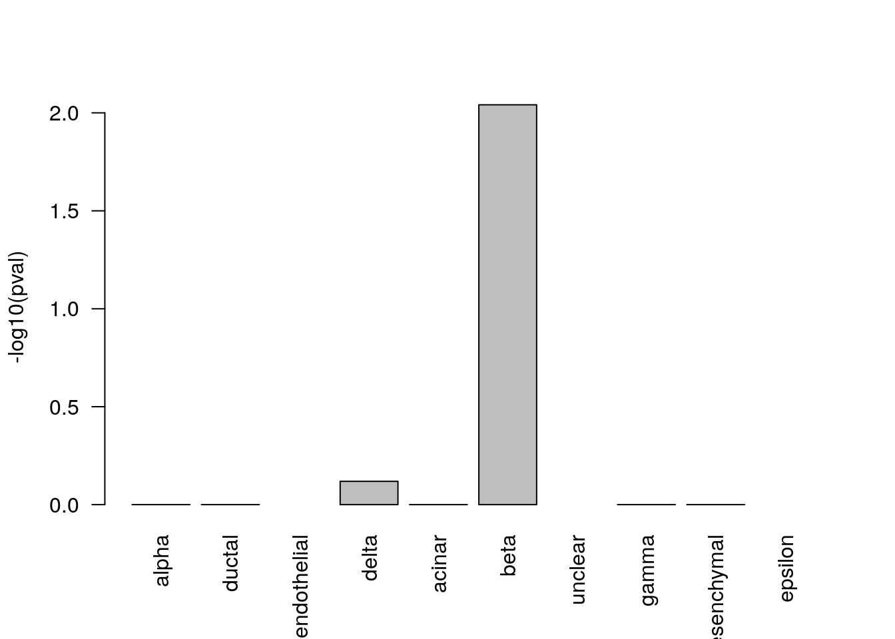
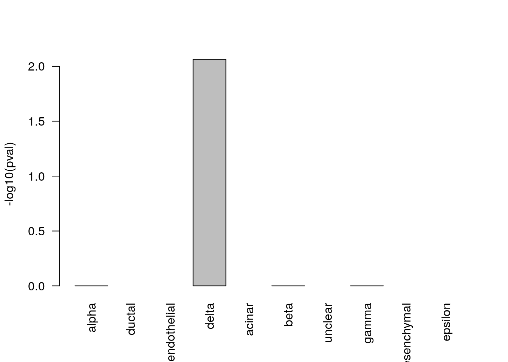
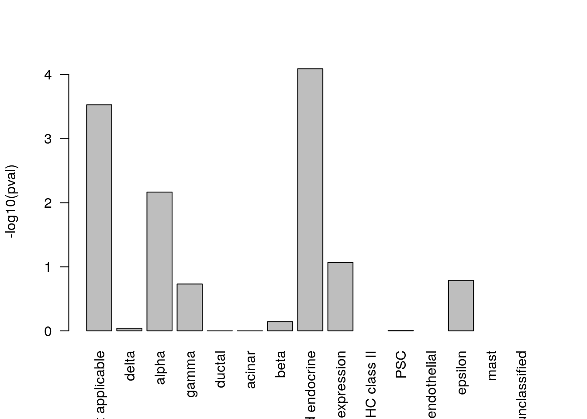
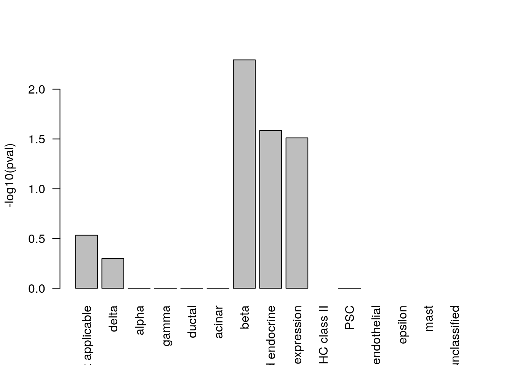

9 Comparing/Combining scRNASeq datasets
library(scater)
library(SingleCellExperiment)9.1 Introduction
As more and more scRNA-seq datasets become available, carrying merged_seurat comparisons between them is key. There are two main approaches to comparing scRNASeq datasets. The first approach is “label-centric” which is focused on trying to identify equivalent cell-types/states across datasets by comparing individual cells or groups of cells. The other approach is “cross-dataset normalization” which attempts to computationally remove experiment-specific technical/biological effects so that data from multiple experiments can be combined and jointly analyzed.
The label-centric approach can be used with dataset with high-confidence cell-annotations, e.g. the Human Cell Atlas (HCA) (Regev et al. 2017) or the Tabula Muris (???) once they are completed, to project cells or clusters from a new sample onto this reference to consider tissue composition and/or identify cells with novel/unknown identity. Conceptually, such projections are similar to the popular BLAST method (Altschul et al. 1990), which makes it possible to quickly find the closest match in a database for a newly identified nucleotide or amino acid sequence. The label-centric approach can also be used to compare datasets of similar biological origin collected by different labs to ensure that the annotation and the analysis is consistent.

Figure 2.4: Label-centric dataset comparison can be used to compare the annotations of two different samples.

Figure 2.5: Label-centric dataset comparison can project cells from a new experiment onto an annotated reference.
The cross-dataset normalization approach can also be used to compare datasets of similar biological origin, unlike the label-centric approach it enables the join analysis of multiple datasets to facilitate the identification of rare cell-types which may to too sparsely sampled in each individual dataset to be reliably detected. However, cross-dataset normalization is not applicable to very large and diverse references since it assumes a significant portion of the biological variablility in each of the datasets overlaps with others.

Figure 2.6: Cross-dataset normalization enables joint-analysis of 2+ scRNASeq datasets.
9.2 Datasets
We will running these methods on two human pancreas datasets: (Muraro et al. 2016) and (Segerstolpe et al. 2016). Since the pancreas has been widely studied, these datasets are well annotated.
muraro <- readRDS("pancreas/muraro.rds")
segerstolpe <- readRDS("pancreas/segerstolpe.rds")This data has already been formatted for scmap. Cell type labels must be stored in the cell_type1 column of the colData slots, and gene ids that are consistent across both datasets must be stored in the feature_symbol column of the rowData slots.
First, lets check our gene-ids match across both datasets:
sum(rowData(muraro)$feature_symbol %in% rowData(segerstolpe)$feature_symbol)/nrow(muraro)## [1] 0.9599519sum(rowData(segerstolpe)$feature_symbol %in% rowData(muraro)$feature_symbol)/nrow(segerstolpe)## [1] 0.719334Here we can see that 96% of the genes present in muraro match genes in segerstople and 72% of genes in segerstolpe are match genes in muraro. This is as expected because the segerstolpe dataset was more deeply sequenced than the muraro dataset. However, it highlights some of the difficulties in comparing scRNASeq datasets.
We can confirm this by checking the overall size of these two datasets.
dim(muraro)## [1] 19127 2126dim(segerstolpe)## [1] 25525 3514In addition, we can check the cell-type annotations for each of these dataset using the command below:
summary(factor(colData(muraro)$cell_type1))## acinar alpha beta delta ductal endothelial
## 219 812 448 193 245 21
## epsilon gamma mesenchymal unclear
## 3 101 80 4summary(factor(colData(segerstolpe)$cell_type1))## acinar alpha beta
## 185 886 270
## co-expression delta ductal
## 39 114 386
## endothelial epsilon gamma
## 16 7 197
## mast MHC class II not applicable
## 7 5 1305
## PSC unclassified unclassified endocrine
## 54 2 41Here we can see that even though both datasets considered the same biological tissue the two datasets, they have been annotated with slightly different sets of cell-types. If you are familiar withpancreas biology you might recognize that the pancreatic stellate cells (PSCs) in segerstolpe are a type of mesenchymal stem cell which would fall under the “mesenchymal” type in muraro. However, it isn’t clear whether these two annotations should be considered synonymous or not. We can use label-centric comparison methods to determine if these two cell-type annotations are indeed equivalent.
Alternatively, we might be interested in understanding the function of those cells that were “unclassified endocrine” or were deemed too poor quality (“not applicable”) for the original clustering in each dataset by leveraging in formation across datasets. Either we could attempt to infer which of the existing annotations they most likely belong to using label-centric approaches or we could try to uncover a novel cell-type among them (or a sub-type within the existing annotations) using cross-dataset normalization.
To simplify our demonstration analyses we will remove the small classes of unassigned cells, and the poor quality cells. We will retain the “unclassified endocrine” to see if any of these methods can elucidate what cell-type they belong to.
segerstolpe <- segerstolpe[,colData(segerstolpe)$cell_type1 != "unclassified"]
segerstolpe <- segerstolpe[,colData(segerstolpe)$cell_type1 != "not applicable",]
muraro <- muraro[,colData(muraro)$cell_type1 != "unclear"]9.3 Projecting cells onto annotated cell-types (scmap)
library(scmap)
set.seed(1234567)We recently developed scmap (Kiselev and Hemberg 2017) - a method for projecting cells from a scRNA-seq experiment onto the cell-types identified in other experiments. Additionally, a cloud version of scmap can be run for free, withmerged_seurat restrictions, from http://www.hemberg-lab.cloud/scmap.
9.3.0.1 Feature Selection
Once we have a SingleCellExperiment object we can run scmap. First we have to build the “index” of our reference clusters. Since we want to know whether PSCs and mesenchymal cells are synonymous we will project each dataset to the other so we will build an index for each dataset. This requires first selecting the most informative features for the reference dataset.
muraro <- selectFeatures(muraro, suppress_plot = FALSE)## Warning in linearModel(object, n_features): Your object does not contain
## counts() slot. Dropouts were calculated using logcounts() slot...
Genes highlighted with the red colour will be used in the futher analysis (projection).
segerstolpe <- selectFeatures(segerstolpe, suppress_plot = FALSE) From the y-axis of these plots we can see that scmap uses a dropmerged_seurat-based feature selection method.
From the y-axis of these plots we can see that scmap uses a dropmerged_seurat-based feature selection method.
Now calculate the cell-type index:
muraro <- indexCluster(muraro)
segerstolpe <- indexCluster(segerstolpe)We can also visualize the index:
heatmap(as.matrix(metadata(muraro)$scmap_cluster_index))
You may want to adjust your features using the setFeatures function if features are too heavily concentrated in only a few cell-types. In this case the dropmerged_seurat-based features look good so we will just them.
Exercise Using the rowData of each dataset how many genes were selected as features in both datasets? What does this tell you abmerged_seurat these datasets?
Answer
9.3.0.2 Projecting
scmap computes the distance from each cell to each cell-type in the reference index, then applies an empirically derived threshold to determine which cells are assigned to the closest reference cell-type and which are unassigned. To account for differences in sequencing depth distance is calculated using the spearman correlation and cosine distance and only cells with a consistent assignment with both distances are returned as assigned.
We will project the segerstolpe dataset to muraro dataset:
seger_to_muraro <- scmapCluster(
projection = segerstolpe,
index_list = list(
muraro = metadata(muraro)$scmap_cluster_index
)
)and muraro onto segerstolpe
muraro_to_seger <- scmapCluster(
projection = muraro,
index_list = list(
seger = metadata(segerstolpe)$scmap_cluster_index
)
)Note that in each case we are projecting to a single dataset but that this could be extended to any number of datasets for which we have computed indices.
Now lets compare the original cell-type labels with the projected labels:
table(colData(muraro)$cell_type1, muraro_to_seger$scmap_cluster_labs)##
## acinar alpha beta co-expression delta ductal endothelial
## acinar 211 0 0 0 0 0 0
## alpha 1 763 0 18 0 2 0
## beta 2 1 397 7 2 2 0
## delta 0 0 2 1 173 0 0
## ductal 7 0 0 0 0 208 0
## endothelial 0 0 0 0 0 0 15
## epsilon 0 0 0 0 0 0 0
## gamma 2 0 0 0 0 0 0
## mesenchymal 0 0 0 0 0 1 0
##
## epsilon gamma MHC class II PSC unassigned
## acinar 0 0 0 0 8
## alpha 0 2 0 0 26
## beta 0 5 1 2 29
## delta 0 0 0 0 17
## ductal 0 0 5 3 22
## endothelial 0 0 0 1 5
## epsilon 3 0 0 0 0
## gamma 0 95 0 0 4
## mesenchymal 0 0 0 77 2Here we can see that cell-types do map to their equivalents in segerstolpe, and importantly we see that all but one of the “mesenchymal” cells were assigned to the “PSC” class.
table(colData(segerstolpe)$cell_type1, seger_to_muraro$scmap_cluster_labs)##
## acinar alpha beta delta ductal endothelial
## acinar 181 0 0 0 4 0
## alpha 0 869 1 0 0 0
## beta 0 0 260 0 0 0
## co-expression 0 7 31 0 0 0
## delta 0 0 1 111 0 0
## ductal 0 0 0 0 383 0
## endothelial 0 0 0 0 0 14
## epsilon 0 0 0 0 0 0
## gamma 0 2 0 0 0 0
## mast 0 0 0 0 0 0
## MHC class II 0 0 0 0 0 0
## PSC 0 0 1 0 0 0
## unclassified endocrine 0 0 0 0 0 0
##
## epsilon gamma mesenchymal unassigned
## acinar 0 0 0 0
## alpha 0 0 0 16
## beta 0 0 0 10
## co-expression 0 0 0 1
## delta 0 0 0 2
## ductal 0 0 0 3
## endothelial 0 0 0 2
## epsilon 6 0 0 1
## gamma 0 192 0 3
## mast 0 0 0 7
## MHC class II 0 0 0 5
## PSC 0 0 53 0
## unclassified endocrine 0 0 0 41Again we see cell-types match each other and that all but one of the “PSCs” match the “mesenchymal” cells providing strong evidence that these two annotations should be considered synonymous.
We can also visualize these tables using a Sankey diagram:
plot(getSankey(colData(muraro)$cell_type1, muraro_to_seger$scmap_cluster_labs[,1], plot_height=400))Exercise How many of the previously unclassified cells would be be able to assign to cell-types using scmap?
Answer
9.3.1 Cell-to-Cell mapping
scmap can also project each cell in one dataset to its approximate closest neighbouring cell in the reference dataset. This uses a highly optimized search algorithm allowing it to be scaled to very large references (in theory 100,000-millions of cells). However, this process is stochastic so we must fix the random seed to ensure we can reproduce our results.
We have already performed feature selection for this dataset so we can go straight to building the index.
set.seed(193047)
segerstolpe <- indexCell(segerstolpe)## Parameter M was not provided, will use M = n_features / 10 (if n_features <= 1000), where n_features is the number of selected features, and M = 100 otherwise.## Parameter k was not provided, will use k = sqrt(number_of_cells)muraro <- indexCell(muraro)## Parameter M was not provided, will use M = n_features / 10 (if n_features <= 1000), where n_features is the number of selected features, and M = 100 otherwise.
## Parameter k was not provided, will use k = sqrt(number_of_cells)In this case the index is a series of clusterings of each cell using different sets of features, parameters k and M are the number of clusters and the number of features used in each of these subclusterings. New cells are assigned to the nearest cluster in each subclustering to generate unique pattern of cluster assignments. We then find the cell in the reference dataset with the same or most similar pattern of cluster assignments.
We can examine the cluster assignment patterns for the reference datasets using:
metadata(muraro)$scmap_cell_index$subclusters[1:5,1:5]## D28.1_1 D28.1_13 D28.1_15 D28.1_17 D28.1_2
## [1,] 4 42 27 43 10
## [2,] 5 8 2 33 37
## [3,] 11 32 35 17 26
## [4,] 2 4 32 2 18
## [5,] 31 18 21 40 1To project and find the w nearest neighbours we use a similar command as before:
muraro_to_seger <- scmapCell(
projection = muraro,
index_list = list(
seger = metadata(segerstolpe)$scmap_cell_index
),
w = 5
)We can again look at the results:
muraro_to_seger$seger[[1]][,1:5]## D28.1_1 D28.1_13 D28.1_15 D28.1_17 D28.1_2
## [1,] 2201 1288 1117 1623 1078
## [2,] 1229 1724 2104 1448 1593
## [3,] 1793 1854 2201 2039 1553
## [4,] 1882 1737 1081 1202 1890
## [5,] 1731 976 1903 1834 1437This shows the column number of the 5 nearest neighbours in segerstolpe to each of the cells in muraro. We could then calculate a pseudotime estimate, branch assignment, or other cell-level data by selecting the appropriate data from the colData of the segerstolpe data set. As a demonstration we will find the cell-type of the nearest neighbour of each cell.
cell_type_NN <- colData(segerstolpe)$cell_type1[muraro_to_seger$seger[[1]][1,]]
head(cell_type_NN)## [1] "alpha" "ductal" "alpha" "alpha" "endothelial"
## [6] "endothelial"9.4 Metaneighbour
Metaneighbour is specifically designed to ask whether cell-type labels are consistent across datasets. It comes in two versions. First is a fully supervised method which assumes cell-types are known in all datasets and calculates how “good” those cell-type labels are. (The precise meaning of “good” will be described below). Alternatively, metaneighbour can estimate how similar all cell-types are to each other both within and across datasets. We will only be using the unsupervised version as it has much more general applicability and is easier to interpret the results of.
Metaneighbour compares cell-types across datasets by building a cell-cell spearman correlation network. The method then tries to predict the label of each cell through weighted “votes” of its nearest-neighbours. Then scores the overall similarity between two clusters as the AUROC for assigning cells of typeA to typeB based on these weighted votes. AUROC of 1 would indicate all the cells of typeA were assigned to typeB before any other cells were, and an AUROC of 0.5 is what you would get if cells were being randomly assigned.
Metanighbour is just a couple of R functions not a complete package so we have to load them using source
source("2017-08-28-runMN-US.R")9.4.1 Prepare Data
Metaneighbour requires all datasets to be combined into a single expression matrix prior to running:
is.common <- rowData(muraro)$feature_symbol %in% rowData(segerstolpe)$feature_symbol
muraro <- muraro[is.common,]
segerstolpe <- segerstolpe[match(rowData(muraro)$feature_symbol, rowData(segerstolpe)$feature_symbol),]
rownames(segerstolpe) <- rowData(segerstolpe)$feature_symbol
rownames(muraro) <- rowData(muraro)$feature_symbol
identical(rownames(segerstolpe), rownames(muraro))## [1] TRUEcombined_logcounts <- cbind(logcounts(muraro), logcounts(segerstolpe))
dataset_labels <- rep(c("m", "s"), times=c(ncol(muraro), ncol(segerstolpe)))
cell_type_labels <- c(colData(muraro)$cell_type1, colData(segerstolpe)$cell_type1)
pheno <- data.frame(Sample_ID = colnames(combined_logcounts),
Study_ID=dataset_labels,
Celltype=paste(cell_type_labels, dataset_labels, sep="-"))
rownames(pheno) <- colnames(combined_logcounts)Metaneighbor includes a feature selection method to identify highly variable genes.
var.genes = get_variable_genes(combined_logcounts, pheno)Since Metaneighbor is much slower than scmap, we will down sample these datasets.
subset <- sample(1:nrow(pheno), 2000)
combined_logcounts <- combined_logcounts[,subset]
pheno <- pheno[subset,]
cell_type_labels <- cell_type_labels[subset]
dataset_labels <- dataset_labels[subset]Now we are ready to run Metaneighbor. First we will run the unsupervised version that will let us see which cell-types are most similar across the two datasets.
unsup <- run_MetaNeighbor_US(var.genes, combined_logcounts, unique(pheno$Celltype), pheno)
heatmap(unsup)
9.5 mnnCorrect
mnnCorrect corrects datasets to facilitate joint analysis. It order to account for differences in composition between two replicates or two different experiments it first matches invidual cells across experiments to find the overlaping biologicial structure. Using that overlap it learns which dimensions of expression correspond to the biological state and which dimensions correspond to batch/experiment effect; mnnCorrect assumes these dimensions are orthologal to each other in high dimensional expression space. Finally it removes the batch/experiment effects from the entire expression matrix to return the corrected matrix.
To match individual cells to each other across datasets, mnnCorrect uses the cosine distance to avoid library-size effect then identifies mututal nearest neighbours (k determines to neighbourhood size) across datasets. Only overlaping biological groups should have mutual nearest neighbours (see panel b below). However, this assumes that k is set to approximately the size of the smallest biological group in the datasets, but a k that is too low will identify too few mutual nearest-neighbour pairs to get a good estimate of the batch effect we want to remove.
Learning the biological/techncial effects is done with either singular value decomposition, similar to RUV we encounters in the batch-correction section, or with principal component analysis with the opitimized irlba package, which should be faster than SVD. The parameter svd.dim specifies how many dimensions should be kept to summarize the biological structure of the data, we will set it to three as we found three major groups using Metaneighbor above. These estimates may be futher adjusted by smoothing (sigma) and/or variance adjustment (var.adj).
mnnCorrect also assumes you’ve already subset your expression matricies so that they contain identical genes in the same order, fortunately we have already done with for our datasets when we set up our data for Metaneighbor.

Figure 9.1: mnnCorrect batch/dataset effect correction. From Haghverdi et al. 2017
require("scran")## Loading required package: scran## Loading required package: BiocParallel# mnnCorrect will take several minutes to run
corrected <- mnnCorrect(logcounts(muraro), logcounts(segerstolpe), k=20, sigma=1, pc.approx=TRUE, subset.row=var.genes, svd.dim=3)First let’s check that we found a sufficient number of mnn pairs, mnnCorrect returns a list of dataframe with the mnn pairs for each dataset.
dim(corrected$pairs[[1]]) # muraro -> others## [1] 0 3dim(corrected$pairs[[2]]) # seger -> others## [1] 2533 3The first and second columns contain the cell column IDs and the third column contains a number indicating which dataset/batch the column 2 cell belongs to. In our case, we are only comparing two datasets so all the mnn pairs have been assigned to the second table and the third column contains only ones
head(corrected$pairs[[2]])## DataFrame with 6 rows and 3 columns
## current.cell other.cell other.batch
## <integer> <Rle> <Rle>
## 1 1553 5 1
## 2 1078 5 1
## 3 1437 5 1
## 4 1890 5 1
## 5 1569 5 1
## 6 373 5 1total_pairs <- nrow(corrected$pairs[[2]])
n_unique_seger <- length(unique((corrected$pairs[[2]][,1])))
n_unique_muraro <- length(unique((corrected$pairs[[2]][,2])))mnnCorrect found 2533 sets of mutual nearest-neighbours between n_unique_seger segerstolpe cells and n_unique_muraro muraro cells. This should be a sufficient number of pairs but the low number of unique cells in each dataset suggests we might not have captured the full biological signal in each dataset.
Exercise Which cell-types had mnns across these datasets? Should we increase/decrease k?
Answer
Now we could create a combined dataset to jointly analyse these data. However, the corrected data is no longer counts and usually will contain negative expression values thus some analysis tools may no longer be appropriate. For simplicity let’s just plot a joint TSNE.
require("Rtsne")## Loading required package: Rtsnejoint_expression_matrix <- cbind(corrected$corrected[[1]], corrected$corrected[[2]])
# Tsne will take some time to run on the full dataset
joint_tsne <- Rtsne(t(joint_expression_matrix[rownames(joint_expression_matrix) %in% var.genes,]), initial_dims=10, theta=0.75,
check_duplicates=FALSE, max_iter=200, stop_lying_iter=50, mom_switch_iter=50)
dataset_labels <- factor(rep(c("m", "s"), times=c(ncol(muraro), ncol(segerstolpe))))
cell_type_labels <- factor(c(colData(muraro)$cell_type1, colData(segerstolpe)$cell_type1))
plot(joint_tsne$Y[,1], joint_tsne$Y[,2], pch=c(16,1)[dataset_labels], col=rainbow(length(levels(cell_type_labels)))[cell_type_labels])
9.6 Cannonical Correlation Analysis (Seurat)
The Seurat package contains another correction method for combining multiple datasets, called CCA. However, unlike mnnCorrect it doesn’t correct the expression matrix itself directly. Instead Seurat finds a lower dimensional subspace for each dataset then corrects these subspaces. Also different from mnnCorrect, Seurat only combines a single pair of datasets at a time.
Seurat uses gene-gene correlations to identify the biological structure in the dataset with a method called canonical correlation analysis (CCA). Seurat learns the shared structure to the gene-gene correlations and then evaluates how well each cell fits this structure. Cells which must better described by a data-specific dimensionality reduction method than by the shared correlation structure are assumed to represent dataset-specific cell-types/states and are discarded before aligning the two datasets. Finally the two datasets are aligned using ‘warping’ algorithms which normalize the low-dimensional representations of each dataset in a way that is robust to differences in population density.
Note because Seurat uses up a lot of library space you will have to restart your R-session to load it, and the plots/merged_seuratput won’t be automatically generated on this page.
Reload the data:
muraro <- readRDS("pancreas/muraro.rds")
segerstolpe <- readRDS("pancreas/segerstolpe.rds")
segerstolpe <- segerstolpe[,colData(segerstolpe)$cell_type1 != "unclassified"]
segerstolpe <- segerstolpe[,colData(segerstolpe)$cell_type1 != "not applicable",]
muraro <- muraro[,colData(muraro)$cell_type1 != "unclear"]
is.common <- rowData(muraro)$feature_symbol %in% rowData(segerstolpe)$feature_symbol
muraro <- muraro[is.common,]
segerstolpe <- segerstolpe[match(rowData(muraro)$feature_symbol, rowData(segerstolpe)$feature_symbol),]
rownames(segerstolpe) <- rowData(segerstolpe)$feature_symbol
rownames(muraro) <- rowData(muraro)$feature_symbol
identical(rownames(segerstolpe), rownames(muraro))First we will reformat our data into Seurat objects:
require("Seurat")
set.seed(4719364)
muraro_seurat <- CreateSeuratObject(raw.data=assays(muraro)[["normcounts"]]) # raw counts aren't available for muraro
muraro_seurat@meta.data[, "dataset"] <- 1
muraro_seurat@meta.data[, "celltype"] <- paste("m",colData(muraro)$cell_type1, sep="-")
seger_seurat <- CreateSeuratObject(raw.data=assays(segerstolpe)[["counts"]])
seger_seurat@meta.data[, "dataset"] <- 2
seger_seurat@meta.data[, "celltype"] <- paste("s",colData(segerstolpe)$cell_type1, sep="-")Next we must normalize, scale and identify highly variable genes for each dataset:
muraro_seurat <- NormalizeData(object=muraro_seurat)
muraro_seurat <- ScaleData(object=muraro_seurat)
muraro_seurat <- FindVariableGenes(object=muraro_seurat, do.plot=TRUE)
seger_seurat <- NormalizeData(object=seger_seurat)
seger_seurat <- ScaleData(object=seger_seurat)
seger_seurat <- FindVariableGenes(object=seger_seurat, do.plot=TRUE)Figure 9.2: muraro variable genes

Figure 9.3: segerstolpe variable genes
Eventhough Seurat corrects for the relationship between dispersion and mean expression, it doesn’t use the corrected value when ranking features. Compare the results of the command below with the results in the plots above:
head(muraro_seurat@hvg.info, 50)
head(seger_seurat@hvg.info, 50)But we will follow their example and use the top 2000 most dispersed genes withmerged_seurat correcting for mean expression from each dataset anyway.
gene.use <- union(rownames(x = head(x = muraro_seurat@hvg.info, n = 2000)),
rownames(x = head(x = seger_seurat@hvg.info, n = 2000)))Exercise Find the features we would use if we selected the top 2000 most dispersed after scaling by mean. (Hint: consider the order function)
Answer
Now we will run CCA to find the shared correlation structure for these two datasets:
Note to speed up the calculations we will be using only the top 5 dimensions but ideally you would consider many more and then select the top most informative ones using DimHeatmap.
merged_seurat <- RunCCA(object=muraro_seurat, object2=seger_seurat, genes.use=gene.use, add.cell.id1="m", add.cell.id2="s", num.cc = 5)
DimPlot(object = merged_seurat, reduction.use = "cca", group.by = "dataset", pt.size = 0.5) # Before correctingFigure 9.4: Before Aligning
To identify dataset specific cell-types we compare how well cells are ‘explained’ by CCA vs dataset-specific principal component analysis.
merged_seurat <- CalcVarExpRatio(object = merged_seurat, reduction.type = "pca", grouping.var = "dataset", dims.use = 1:5)
merged.all <- merged_seurat
merged_seurat <- SubsetData(object=merged_seurat, subset.name="var.ratio.pca", accept.low = 0.5) # CCA > 1/2 as good as PCA
merged.discard <- SubsetData(object=merged.all, subset.name="var.ratio.pca", accept.high = 0.5)
summary(factor(merged.discard@meta.data$celltype)) # check the cell-type of the discarded cells.Here we can see that despite both datasets containing endothelial cells, almost all of them have been discarded as “dataset-specific”. Now we can align the datasets:
merged_seurat <- AlignSubspace(object = merged_seurat, reduction.type = "cca", grouping.var = "dataset", dims.align = 1:5)
DimPlot(object = merged_seurat, reduction.use = "cca.aligned", group.by = "dataset", pt.size = 0.5) # After aligning subspaces
Figure 9.5: After Aligning
Exercise Compare the results for if you use the features after scaling dispersions.
Answer

Figure 9.6: After Aligning
Advanced Exercise Use the clustering methods we previously covered on the combined datasets. Do you identify any novel cell-types?
9.6.1 sessionInfo()
## R version 3.4.3 (2017-11-30)
## Platform: x86_64-pc-linux-gnu (64-bit)
## Running under: Debian GNU/Linux 9 (stretch)
##
## Matrix products: default
## BLAS: /usr/lib/openblas-base/libblas.so.3
## LAPACK: /usr/lib/libopenblasp-r0.2.19.so
##
## locale:
## [1] LC_CTYPE=en_US.UTF-8 LC_NUMERIC=C
## [3] LC_TIME=en_US.UTF-8 LC_COLLATE=en_US.UTF-8
## [5] LC_MONETARY=en_US.UTF-8 LC_MESSAGES=C
## [7] LC_PAPER=en_US.UTF-8 LC_NAME=C
## [9] LC_ADDRESS=C LC_TELEPHONE=C
## [11] LC_MEASUREMENT=en_US.UTF-8 LC_IDENTIFICATION=C
##
## attached base packages:
## [1] stats4 parallel methods stats graphics grDevices utils
## [8] datasets base
##
## other attached packages:
## [1] Rtsne_0.13 scran_1.6.7
## [3] BiocParallel_1.12.0 bindrcpp_0.2
## [5] scmap_1.1.5 scater_1.6.2
## [7] SingleCellExperiment_1.0.0 SummarizedExperiment_1.8.1
## [9] DelayedArray_0.4.1 matrixStats_0.53.0
## [11] GenomicRanges_1.30.1 GenomeInfoDb_1.14.0
## [13] IRanges_2.12.0 S4Vectors_0.16.0
## [15] ggplot2_2.2.1 Biobase_2.38.0
## [17] BiocGenerics_0.24.0 googleVis_0.6.2
## [19] knitr_1.19
##
## loaded via a namespace (and not attached):
## [1] bitops_1.0-6 bit64_0.9-7 progress_1.1.2
## [4] httr_1.3.1 rprojroot_1.3-2 dynamicTreeCut_1.63-1
## [7] tools_3.4.3 backports_1.1.2 irlba_2.3.2
## [10] DT_0.4 R6_2.2.2 vipor_0.4.5
## [13] DBI_0.7 lazyeval_0.2.1 colorspace_1.3-2
## [16] gridExtra_2.3 prettyunits_1.0.2 bit_1.1-12
## [19] compiler_3.4.3 labeling_0.3 bookdown_0.6
## [22] scales_0.5.0 randomForest_4.6-12 proxy_0.4-21
## [25] stringr_1.2.0 digest_0.6.15 rmarkdown_1.8
## [28] XVector_0.18.0 pkgconfig_2.0.1 htmltools_0.3.6
## [31] limma_3.34.6 highr_0.6 htmlwidgets_1.0
## [34] rlang_0.1.6 RSQLite_2.0 FNN_1.1
## [37] shiny_1.0.5 bindr_0.1 zoo_1.8-1
## [40] jsonlite_1.5 dplyr_0.7.4 RCurl_1.95-4.10
## [43] magrittr_1.5 GenomeInfoDbData_1.0.0 Matrix_1.2-7.1
## [46] Rcpp_0.12.15 ggbeeswarm_0.6.0 munsell_0.4.3
## [49] viridis_0.4.1 stringi_1.1.6 yaml_2.1.16
## [52] edgeR_3.20.7 zlibbioc_1.24.0 rhdf5_2.22.0
## [55] plyr_1.8.4 grid_3.4.3 blob_1.1.0
## [58] shinydashboard_0.6.1 lattice_0.20-34 locfit_1.5-9.1
## [61] pillar_1.1.0 igraph_1.1.2 rjson_0.2.15
## [64] reshape2_1.4.3 codetools_0.2-15 biomaRt_2.34.2
## [67] XML_3.98-1.9 glue_1.2.0 evaluate_0.10.1
## [70] data.table_1.10.4-3 httpuv_1.3.5 gtable_0.2.0
## [73] assertthat_0.2.0 xfun_0.1 mime_0.5
## [76] xtable_1.8-2 e1071_1.6-8 class_7.3-14
## [79] viridisLite_0.2.0 tibble_1.4.2 AnnotationDbi_1.40.0
## [82] beeswarm_0.2.3 memoise_1.1.0 tximport_1.6.0
## [85] statmod_1.4.309.7 Search scRNA-Seq data
library(scfind)
library(SingleCellExperiment)
set.seed(1234567)9.7.1 About
scfind is a tool that allows one to search single cell RNA-Seq collections (Atlas) using lists of genes, e.g. searching for cells and cell-types where a specific set of genes are expressed. scfind is a Bioconductor package. Cloud implementation of scfind with a large collection of datasets is available on our website.

Figure 2.4: scfind can be used to search large collection of scRNA-seq data by a list of gene IDs.
9.7.2 Dataset
We will run scfind on the same human pancreas dataset as in the previous chapter. scfind also operates on SingleCellExperiment class:
muraro <- readRDS("pancreas/muraro.rds")9.7.3 Gene Index
Now we need to create a gene index using our dataset:
cellIndex <- buildCellIndex(muraro)The gene index contains for each gene indexes of the cells where it is expressed. This is similar to sparsification of the expression matrix. In addition to this the index is also compressed in a way that it can accessed very quickly. We estimated that one can achieve 5-10 compression factor with this method.
By default the cell_type1 column of the colData slot of the SingleCellExperiment object is used to define cell types, however it can also be defined manually using the cell_type_column argument of the buildCellTypeIndex function (check ?buildCellTypeIndex).
9.7.4 Marker genes
Now let’s define lists of cell type specific marker genes. We will use the marker genes identified in the original publication, namely in Figure 1:
# these genes are taken from fig. 1
muraro_alpha <- c("GCG", "LOXL4", "PLCE1", "IRX2", "GC", "KLHL41",
"CRYBA2", "TTR", "TM4SF4", "RGS4")
muraro_beta <- c("INS", "IAPP", "MAFA", "NPTX2", "DLK1", "ADCYAP1",
"PFKFB2", "PDX1", "TGFBR3", "SYT13")
muraro_gamma <- c("PPY", "SERTM1", "CARTPT", "SLITRK6", "ETV1",
"THSD7A", "AQP3", "ENTPD2", "PTGFR", "CHN2")
muraro_delta <- c("SST", "PRG4", "LEPR", "RBP4", "BCHE", "HHEX",
"FRZB", "PCSK1", "RGS2", "GABRG2")9.7.5 Search cells by a gene list
findCell function returns a list of p-values corresponding to all cell types in a given dataset. It also outputs a list of cells in which genes from the given gene list are co-expressed. We will run it on all lists of marker genes defined above:
res <- findCell(cellIndex, muraro_alpha)
barplot(-log10(res$p_values), ylab = "-log10(pval)", las = 2)
head(res$common_exprs_cells)## cell_id cell_type
## 1 1 alpha
## 2 3 alpha
## 3 7 alpha
## 4 9 alpha
## 5 15 alpha
## 6 20 alphaExercise 1
Perform a search by beta, delta and gamma gene lists and explore the results.

## cell_id cell_type
## 1 71 alpha
## 2 72 beta
## 3 92 beta
## 4 96 beta
## 5 98 beta
## 6 102 beta
## cell_id cell_type
## 1 40 delta
## 2 212 delta
## 3 225 delta
## 4 253 delta
## 5 330 delta
## 6 400 delta
## cell_id cell_type
## 1 53 alpha
## 2 102 beta
## 3 255 gamma
## 4 305 gamma
## 5 525 gamma
## 6 662 gammaExercise 2
Load the segerstolpe and search it using alpha, beta, delta and gamma gene lists identified in muraro dataset.

## cell_id cell_type
## 1 18 alpha
## 2 20 alpha
## 3 24 alpha
## 4 32 alpha
## 5 43 alpha
## 6 48 alpha
## cell_id cell_type
## 1 15 co-expression
## 2 58 beta
## 3 300 beta
## 4 390 co-expression
## 5 504 co-expression
## 6 506 beta
## cell_id cell_type
## 1 170 delta
## 2 715 delta
## 3 1039 co-expression
## 4 1133 delta
## 5 1719 delta
## 6 1721 delta
## cell_id cell_type
## 1 47 gamma
## 2 458 gamma
## 3 476 gamma
## 4 600 gamma
## 5 606 gamma
## 6 622 gamma9.7.6 sessionInfo()
sessionInfo()## R version 3.4.3 (2017-11-30)
## Platform: x86_64-pc-linux-gnu (64-bit)
## Running under: Debian GNU/Linux 9 (stretch)
##
## Matrix products: default
## BLAS: /usr/lib/openblas-base/libblas.so.3
## LAPACK: /usr/lib/libopenblasp-r0.2.19.so
##
## locale:
## [1] LC_CTYPE=en_US.UTF-8 LC_NUMERIC=C
## [3] LC_TIME=en_US.UTF-8 LC_COLLATE=en_US.UTF-8
## [5] LC_MONETARY=en_US.UTF-8 LC_MESSAGES=C
## [7] LC_PAPER=en_US.UTF-8 LC_NAME=C
## [9] LC_ADDRESS=C LC_TELEPHONE=C
## [11] LC_MEASUREMENT=en_US.UTF-8 LC_IDENTIFICATION=C
##
## attached base packages:
## [1] parallel stats4 methods stats graphics grDevices utils
## [8] datasets base
##
## other attached packages:
## [1] SingleCellExperiment_1.0.0 SummarizedExperiment_1.8.1
## [3] DelayedArray_0.4.1 matrixStats_0.53.0
## [5] Biobase_2.38.0 GenomicRanges_1.30.1
## [7] GenomeInfoDb_1.14.0 IRanges_2.12.0
## [9] S4Vectors_0.16.0 BiocGenerics_0.24.0
## [11] scfind_1.0.0 knitr_1.19
##
## loaded via a namespace (and not attached):
## [1] Rcpp_0.12.15 highr_0.6 plyr_1.8.4
## [4] pillar_1.1.0 compiler_3.4.3 XVector_0.18.0
## [7] bindr_0.1 bitops_1.0-6 tools_3.4.3
## [10] zlibbioc_1.24.0 digest_0.6.15 bit_1.1-12
## [13] tibble_1.4.2 evaluate_0.10.1 lattice_0.20-34
## [16] pkgconfig_2.0.1 rlang_0.1.6 Matrix_1.2-7.1
## [19] yaml_2.1.16 xfun_0.1 bindrcpp_0.2
## [22] GenomeInfoDbData_1.0.0 stringr_1.2.0 dplyr_0.7.4
## [25] rprojroot_1.3-2 grid_3.4.3 glue_1.2.0
## [28] R6_2.2.2 hash_2.2.6 rmarkdown_1.8
## [31] bookdown_0.6 reshape2_1.4.3 magrittr_1.5
## [34] backports_1.1.2 htmltools_0.3.6 assertthat_0.2.0
## [37] stringi_1.1.6 RCurl_1.95-4.10set.seed(1234567)References
Regev, Aviv, Sarah Teichmann, Eric S Lander, Ido Amit, Christophe Benoist, Ewan Birney, Bernd Bodenmiller, et al. 2017. “The Human Cell Atlas.” bioRxiv, May, 121202.
Altschul, Stephen F., Warren Gish, Webb Miller, Eugene W. Myers, and David J. Lipman. 1990. “Basic Local Alignment Search Tool.” Journal of Molecular Biology 215 (3). Elsevier BV: 403–10. doi:10.1016/s0022-2836(05)80360-2.
Muraro, Mauro J., Gitanjali Dharmadhikari, Dominic Grün, Nathalie Groen, Tim Dielen, Erik Jansen, Leon van Gurp, et al. 2016. “A Single-Cell Transcriptome Atlas of the Human Pancreas.” Cell Systems 3 (4). Elsevier BV: 385–394.e3. doi:10.1016/j.cels.2016.09.002.
Segerstolpe, Åsa, Athanasia Palasantza, Pernilla Eliasson, Eva-Marie Andersson, Anne-Christine Andréasson, Xiaoyan Sun, Simone Picelli, et al. 2016. “Single-Cell Transcriptome Profiling of Human Pancreatic Islets in Health and Type 2 Diabetes.” Cell Metabolism 24 (4). Elsevier BV: 593–607. doi:10.1016/j.cmet.2016.08.020.
Kiselev, Vladimir Yu, and Martin Hemberg. 2017. “Scmap - a Tool for Unsupervised Projection of Single Cell RNA-seq Data.” bioRxiv, July, 150292.